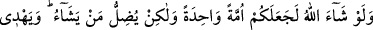
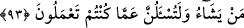

olmaları mümkün değildir.
Şeyh Sa‘dî (k.s.) şöyle der:
Yol doğru gerek, yukarıya doğru değil
Çünkü kâfir de görünüş bakımından bize benzer
Amellerinize sevap ve ceza ile mukâbelede bulunduğu zaman dünyada iken “hakkında
ihtilafa düşmekte olduğunuz şeyi kıyâmet gününde mutlaka size açıklayacaktır.” Bu
ifâde, İslâm’a ve hak dine muhâlefet etmekten bir sakındırma ve korkutmadır. Çünkü bu
muhâlefet kişiyi ebedî azaba götürür.
93. Allah dileseydi hepinizi bir tek ümmet kılardı; fakat O, dilediğini saptırır,
dilediğini de doğru yola iletir. Yaptıklarınızdan mutlaka sorumlu tutulacaksınız.
“Allah” icbar edici ve zorlayıcı bir irâde ile “dileseydi hepinizi” İslam üzere ittifak
eden “bir tek ümmet kılardı; fakat” hikmetine muhâlif olacağı için bunu dilemez.
Bilakis “O, dilediğini saptırır,” yâni o kişinin cüz’î irâdesi doğrultusunda onda dalâleti
yaratır. “Dilediğini de doğru yola iletir.” Dilediğini de yine o kişinin ihtiyârına/kendi
seçimine göre hidâyete sevk eder. Dolayısıyla saptırma ve hidâyet o kişinin ihtiyarı
dolayısıyladır. Bunda ancak seçkin kulların bilebileceği büyük sırlar vardır.
Allah’a yemin olsun ki hepiniz kıyâmet gününde ahde vefa ve ahdi bozma gibi
dünyada “yaptıklarınızdan mutlaka sorumlu tutulacaksınız.” ona göre de bunların
karşılığını göreceksiniz. Size bir şeyi anlamak için değil azarlamak ve yaptığınızın
karşılığı verilmek için soru sorulacak.
Bilesin ki, üzerine ahid yapılan şeyler çoktur. Sâdık müridlerle kâmil şeyhler
arasındaki bey‘at de gerçek ahidlerdendir ve bu Allah’a kavuşuncaya kadar devam eder.
Âyette meşâyıhtan velâyet sâhibi bir zâtın irâdesine kendini teslim eden müride de
işaret vardır. Böylece bir mürid, sâdık bir taleble şiddetli mücâhedeler sırasında sebat,
nefse ve hevaya muhâlefete sabır, sohbete devam, hizmete boyun eğme, ihvana
tahammül, onlarla beraber edebi muhafaza ve benzeri konularda onunla muâhede yapar.
Bu ahdi taşırken usanır, sorumluluklara tahammülde gevşek davranırsa ahdini bozmuş,
azmini yitirmiş ve gerisin geriye dönmüş olur. Sonra mürid Allah’ı talebin sebepleri
olan irâde, mücâhede, hırka giymek, sohbete ve hizmete devam ile taleb ve seyr
sırasında elde edilen fütûhatı, dünyayı talebin âletleri ve nefsinin şehvetlerini tahsil
etmenin vâsıtaları edinir. Nefsinin şehvetlerini de yapmacık hareketlerle, riyâkarlık ve